VMware虚拟机搭载TOR出网
VMware虚拟机搭载TOR出网
在样本分析的工作中，通常会存在出网调试的需要，而直接使用本地网络出网会存在被攻击者反向溯源的风险。
所以一种更加安全可靠的出网方案是走TOR出网，从而实现匿名性。
TOR(The Onion Router)
TOR是一个开源项目，其目的主要是为用户提供匿名通信服务。TOR通过志愿者运行的服务器（节点）网络运行，这些服务器（节点）通过多层加密传递互联网流量，从而创建多跳、类似洋葱的路由机制。
当用户使用TOR时，其互联网流量经由一连串的TOR节点路由，而每个节点只知道前一个节点的IP地址，而节点间的通信也采用了多层加密，因此无论是互联网服务提供商(ISP)还是监控机构，都很难以追踪正在传输的数据的来源和目的地。
环境设置
TOR项目中提供了TOR浏览器，通过TOR浏览器能够实现匿名上网的目的。
但是如果想要所有的流量都能够走TOR实现匿名，那么还需要更加复杂的设置。
不仅如此，如果同时有多个虚拟机需要匿名出网，那么可以将这些虚拟机部署在同一个网段，然后将TOR搭载在出网的网关上，所以需要将TOR服务搭载到一个路由器上。
pfSense
pfSense是一款基于FreeBSD操作系统的开源防火墙和路由软件，可以用来构建虚拟环境中的防火墙和路由器。
所以现在的思路就是，使用pfSense创建一个虚拟路由器，也就是VMware中的一个虚拟机，将虚拟网段中的虚拟机的网关设置为这个虚拟路由器的LAN口地址。随后，再在这个虚拟路由器中搭载TOR服务，使其将流量路由到TOR网络。
使用pfSense创建TOR网关
创建pfSense虚拟路由器
下载pfSense镜像，可以在官网上下载，但是官网上只有最新的Release版本，而本文建议使用pfSense2.5的版本。
所以可以在Github上找到镜像源：
https://github.com/CloudSentralDotNet/iso_pfsense
下载ISO文件后直接在VMware中创建虚拟机，跟创建普通虚拟机没什么区别，只是硬件设置需要注意：
-
内存256M就够用了
-
需要设置两个网卡(网络适配器)
一个设置为仅主机模式，用以充当虚拟网络的网关(LAN口)
一个设置为NAT模式，用以出网，充当路由器的WAN口
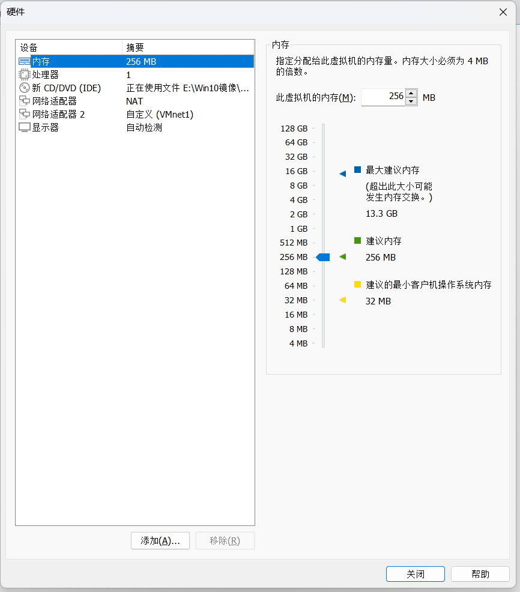
在设置好pfSense的硬件设置后，启动虚拟机执行安装程序了。按照默认设置，除了分区需要注意一点，就是使用BIOS分区。
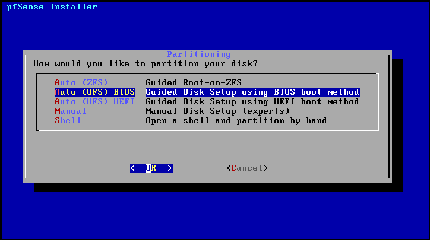
安装完成后，进入pfSense配置页面。
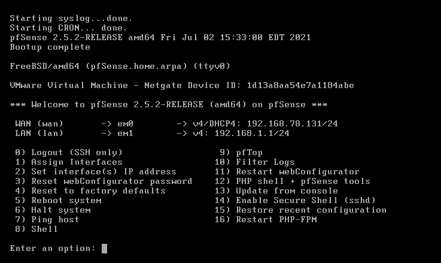
打开虚拟机网络设置编辑器，检查一下上面的WAN口是不是配在NAT网段的。
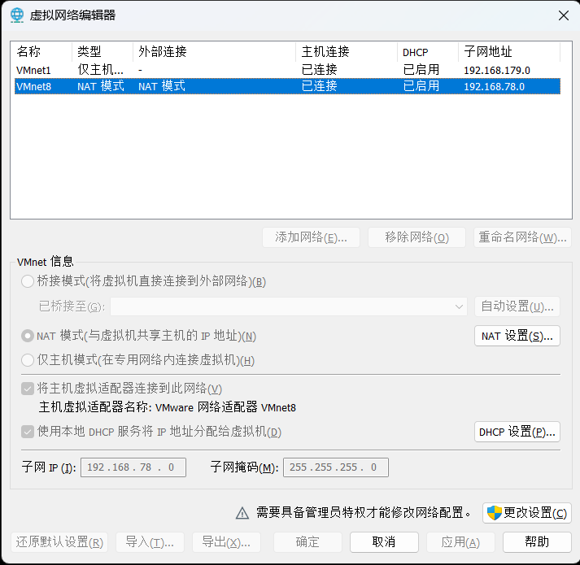
我这里可以看到WAN口是否属于VMware虚拟机NAT网段的，如果不是的话需要在pfSense配置页面的选项1重新分配网卡。
网卡分配没问题的话就进入选项2，进行LAN地址的手动分配。
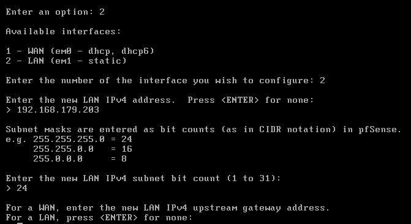
剩下的IPv6的设置不用管，直接ENTER。注意关闭LAN口的dhcp服务，并开启pfSense的网页配置器(webConfigurator)。
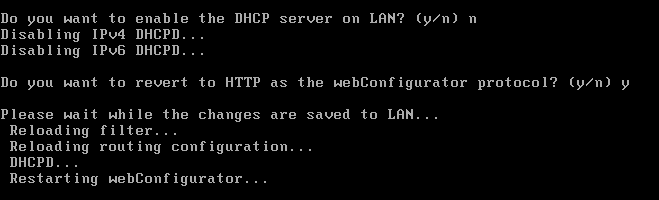
开启了webConfigurator后，就可以直接在浏览器中输入LAN口的地址进行pfSense路由器配置了，路由器配置页的默认账号密码为：admin, pfsense。
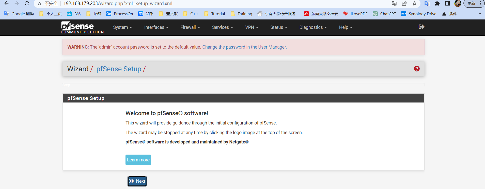
根据安装向导进行安装即可，不需要执行什么额外的操作，不过可以修改一下路由器配置页的登录密码。
完成安装后，可以验证pfSense路由功能。
开启另一台虚拟机，虚拟机的网络适配器设置为仅主机模式，IP地址与pfSense路由器的LAN口地址属于同一个网段，然后将默认网关以及DNS服务器（pfSense提供DNS解析服务）都设置为pfSense路由器LAN口地址。
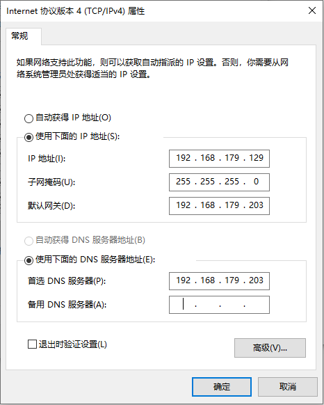
然后用路由器打开一个页面，可以看到是能够连通互联网的。
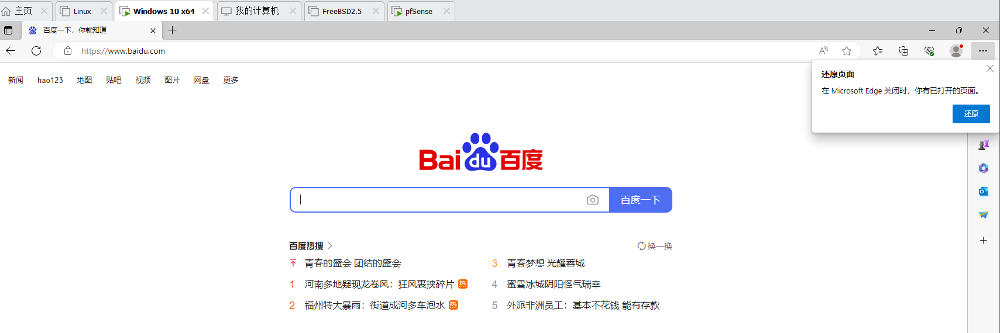
所以可以验证pfSense的路由功能是没有问题的，下一步就是要在pfSense中搭载tor服务了，让pfSense将流量路由到tor网络中。
在pfSense中搭载TOR服务
回到pfSense虚拟机，进入选项14，开启Secure Shell服务。
然后回到物理机中，开启命令行通过shell登录pfSense虚拟机。登录的账号密码就是pfSense网页配置器的账号密码。ssh登录后通过选项8进入shell页面。
ssh admin@192.168.179.203
后面需要使用FreeBSD系统中的包管理器pkg安装我们所需要的tor包。pfSense中设置了默认的包仓库，名为pfSense和pfSense-core。但是这两个仓库里面都没有我们需要的tor包，tor包在FreeBSD仓库中，这个仓库是默认关闭的。修改pkg的仓库配置文件来开启这个仓库，
vi /usr/local/etc/pkg/repos/FreeBSD.conf
vi /usr/local/etc/pkg/repos/pfSense.conf
将FreeBSD: { enabled: no }改为FreeBSD: { enabled: yes }。
使用
pkg stat可以查看现在可用的仓库数量以及可下载的包的数量，使用pkg rquery -I tor可以查看tor在已有仓库里的那个仓库中。如果想要了解更多pkg相关的内容，可以在google上搜索man pkg导航到FreeBSD官网的pkg手册。
然后输入pkg update更新pkg仓库目录。
更新完成后，因为我们只需要从FreeBSD仓库中下载我们需要的包，所以可以删除前面修改过的pfSense.conf文件，只保留FreeBSD这一个仓库。使用
pkg install tor
下载tor包。
因为这里并没有进行很细致的pkg配置，所以不删除pfSense仓库的话后面的下载过程中会出现"An error occured while fetching package"。猜测可能是因为pfSense的源在外网，所以无法访问。所以这里直接删除这个仓库，以免出现上面的错误而中断下载进程。
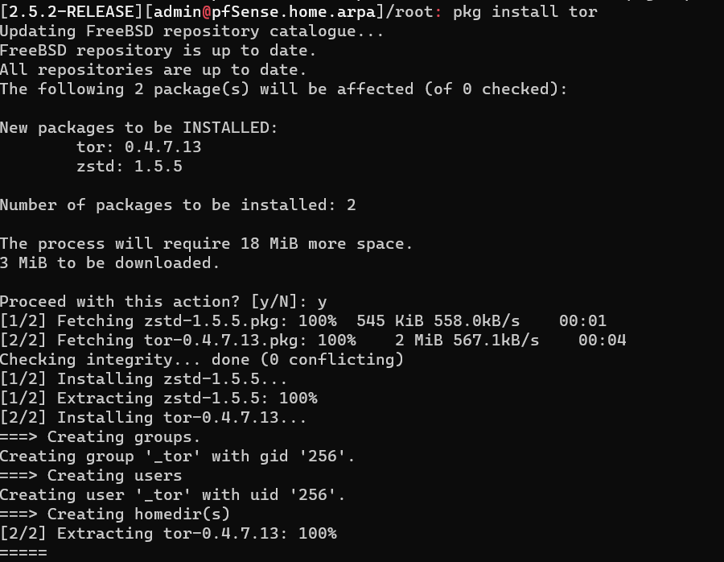
这样就顺利将TOR下载到pfSense中了，接下来就是进行tor配置。
先删除原来的配置文件：
rm /usr/local/etc/tor/torrc
然后将这个配置文件的内容写为：
1 | |
将上面的LAN_IP_ADDR改成pfSense的LAN口IP地址。
可以通过命令/usr/local/bin/tor来启动TOR。
如果想要让TOR在pfSense开机时自启动，可以在目录/usr/local/etc/rc.d下创建tor启动脚本，比如：
2
3touch /usr/local/etc/rc.d/tor.sh
chmod +x /usr/local/etc/rc.d/tor.sh
echo "/usr/local/bin/tor" >> /usr/local/etc/rc.d/tor.shpfSense每次开机时就会运行/usr/local/etc/rc.d/tor.sh脚本，从而启动TOR。
随后可以配置防火墙规则，让pfSense将流量路由到TOR网中。
来到pfSense的网页配置器中，Firewall->Rules->LAN，添加下面这段防火墙规则：
1 | |
上面这段防火墙规则允许pfSense通过TOR网络进行DNS解析，保存后回到防火墙规则列表中，删除下面两条原有的防火墙规则，因为这两条规则会绕过我们刚设置的规则。
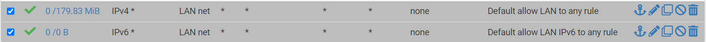
删除后点击Apply Changes。
然后关闭pfSense原有的DNS解析服务，Services->DNS resolver，将Enable选项取消掉，然后save & apply。
再然后就是设置端口转发(Port Forward)规则，Firewall->NAT->Port Forward，添加规则：
1 | |
上面的规则会将LAN网段上的虚拟机对80端口的访问转发到pfSense上的9040端口上，同理，还可以添加其他端口的转发规则，比如HTTPS(443)，最后Save & apply。
验证TOR
完成了上面所介绍的步骤以后，TOR就算搭载完成了。
但是需要注意的是，国内的网络并不能直接访问TOR网络，因为这中间隔着一道墙。所以如果想要让pfSense将流量路由到TOR网络的话还需要设置前置代理，主要就是能够让pfSense访问到外网。
所以完整的虚拟机设置示意图如下：
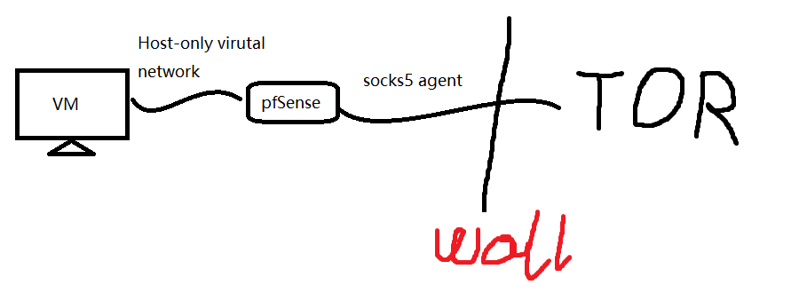
所以如果本地网络有socks5服务的话可以在TOR配置文件中添加代理服务。
1 | |
另外，TOR也提供了socks5代理服务，默认在127.0.0.1:9050提供服务，可以在pfSense中使用
curl --socks 127.0.0.1:9050 URL
来进行测试，使用TOR提供的socks5代理服务意味着上面的命令将会走TOR网络访问URL。
完成配置以后，可以回到前面验证pfSense路由功能的虚拟机中，访问网址：
会得到下面的页面：
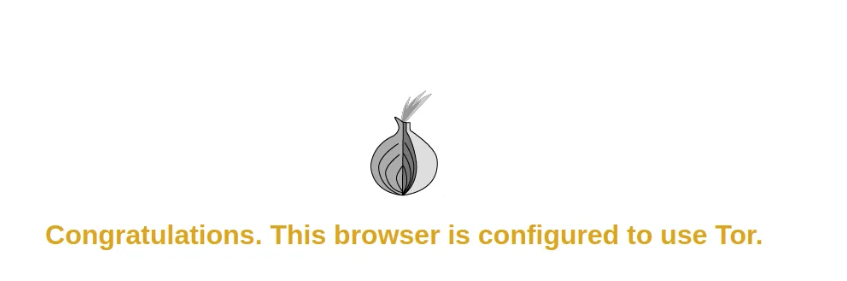
说明虚拟机确实是通过TOR网络访问的该页面。
Ref.
Dark web: Building a Tor Gateway. In some instances it may be necessary… | by Adam Maxwell | Medium